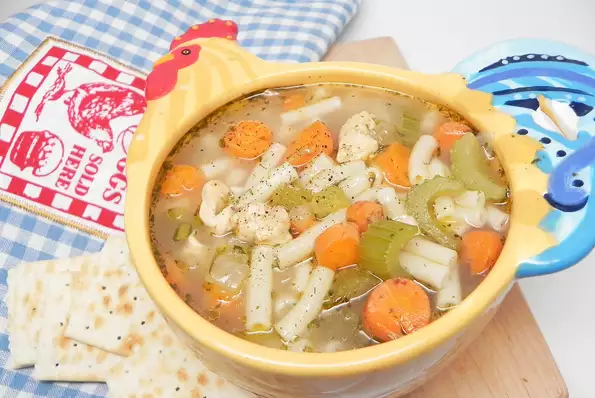

Chicken Soup Recipes

Homemade Chicken Soup Recipe
Chicken noodle soup is just the start. A world of variety awaits you in this endless array of chicken soups!
Ingredients
- 1 (3 pound) whole chicken
- 4 carrots, halved
- 4 stalks celery, halved
- 1 large onion, halved
- water to cover
- salt and pepper to taste
- 1 teaspoon chicken bouillon granules (Optional)
Directions
- Step 1
Put the chicken, carrots, celery and onion in a large soup pot and cover with cold water. Heat and simmer, uncovered, until the chicken meat falls off of the bones (skim off foam every so often).
- Step 2
Take everything out of the pot. Strain the broth. Pick the meat off of the bones and chop the carrots, celery and onion. Season the broth with salt, pepper and chicken bouillon to taste, if desired. Return the chicken, carrots, celery and onion to the pot, stir together, and serve.